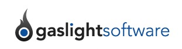
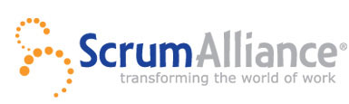
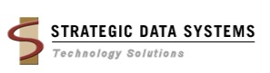

Location
Microsoft Office
4605 Duke Dr Ste 800
Mason, OH 45040-7627
View Larger Map

Discussion Group
Sponsors
We'd like to thank all our sponsors for helping make this event possible!
  What is Cincinnati Day of Agile?
As the Agile project management process sweeps across the software industry, businesses not understanding the details are being left behind. The Cincinnati Day of Agile is an opportunity to understand what Agile is all about and hear from people that have used it, succeeded with it and have the results to prove it.
At this one day event on Saturday, May 15th, a host of industry experts will be on hand to offer their hard won experiences. By bringing together a mix of developers, managers, Agile professionals, and technologists, the Cincinnati Day of Agile also provides excellent networking opportunities for its attendees. We hope you will join us to learn how Agile can make your software development process more effective, productive, and profitable.
Schedule
An initial list of talks is now available but in no particular order.
| Opening Remarks | Phil Japikse |
| Agile Flavors | Mark Windholtz |
| Agile Success Story | Sujit Upadhye |
| Engineering Practices | Jim Weirich |
| Estimation | Mike Eaton |
| Kanban/Sprints | Brian Prince |
| Why Agile Fails | Ed Sumerfield & Chris Nelson |
| Enterprise Agility | Phil Japikse |
| Budgeting an Agile Project | Todd Kauffman |
| Retrospectives | Jim Holmes |
| Business Practices | Mark Windholtz |
Speakers
Details to be announced.